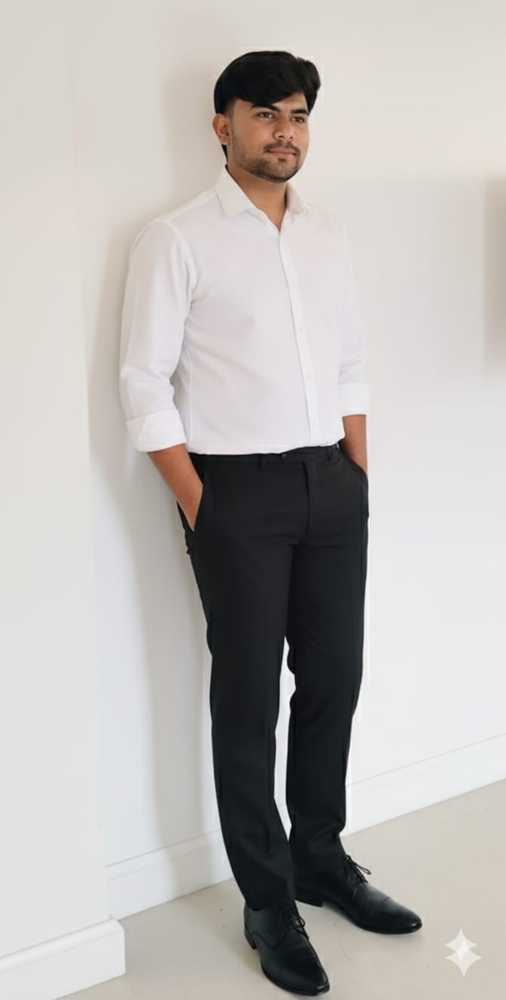

Hi, I’m Saurabh Patle 👋
I’m a passionate Web Developer and Startup Builder 🚀
focused on creating modern websites, business systems, and digital solutions
that help people grow online.
My journey began with a simple but powerful dream — to build something of my own. After getting selected through my college campus placement in a leading IT company, I realized that I don’t just want a job — I want to create impact. Inspired by great personalities like Ratan Tata and with the blessings of Shree Ganesh, I decided to start my own journey as a founder. On 11 March 2026, after completing my Bachelor’s Degree in B.Com (Computer Applications) from N.M.D College, Gondia (Maharashtra), I took the first step towards building my own company.
I come from a middle-class family where I have seen struggles closely. My father works as a salesman, and that reality has shaped my mindset. My mission is not just to build a company — but to create opportunities, reduce inequality, and help people grow financially through digital solutions. I believe in hard work, honesty, and consistency, and I’m committed to building something meaningful that creates real value in society.